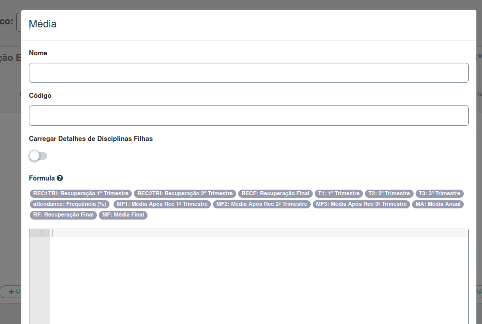
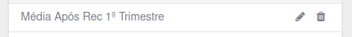

Sistemas de Avaliação

Esta seção permite gerar e publicar as médias finais, além de ajustá-las após recuperações. As principais funcionalidades incluem:
- Criação de sistemas de avaliação: Configure diferentes fórmulas para calcular e ajustar notas ao final de cada período ou calendário.
- Geração das médias: Execute as fórmulas para calcular e disponibilizar publicamente as médias dos alunos.
Abaixo está um exemplo da interface desta seção:

A seguir, explicamos como realizar cada uma das ações mencionadas acima.
Geração das Médias
Clique no botão superior Ações:

Selecione a opção Gerar médias. Isso abrirá uma nova tela onde você poderá escolher até qual nível deseja gerar a média:
- Oferta de currículo: Gera as médias para todo o segmento, por exemplo, todo o ensino médio.
- Módulo: Gera as médias de um segmento específico do currículo, como a terceira série do ensino médio.
- Turma: Gera as médias de uma turma específica dentro do segmento, como a turma A da terceira série.
- Disciplina: Gera a média de uma matéria específica dentro da turma.
- Aluno: Gera a média de um aluno específico.
obs: Ao marcar a primeira opção, já é possível gerar as médias.
Após isso, clique em Gerar.

Outras funções do botão "Opções"
Ao clicar no botão Opções, além de gerar as médias, você pode:
- Listar médias geradas: para ver as médias que forma geradas de cada aluno
- Copiar Sistemas de Avaliação: copiar as fórmulas de um modelo já criado
- Acompanhemento cálculo de médias: acompanhar quem gerou as médias
Criação de sistemas de avaliação
obs: esta secção aplicasse apenas para a T.I
Clique no botão +Sistema de Avaliação:

Isso irá abir uma nova tela, onde deve ser preenchido:

- Nome: Nome do sistema de avaliação.
- Código: Identificação única para o sistema de avaliação.
- Oferta de Currículo: Determina o currículo ao qual o sistema de avaliação será aplicado.
- Módulo: Determina um segmento específico.
- Média Final: Define a fórmula ou critérios para calcular a média final do aluno.
- Nota Mínima: Nota mínima exigida para aprovação em uma disciplina.
- Frequência Mínima (%): Percentual mínimo de presença necessário para aprovação.
- Número de Disciplinas para Reprovação Geral: Quantidade máxima de disciplinas em que um aluno pode ser reprovado antes de ser considerado reprovado no curso inteiro.
- Data para Geração do Resultado (Status): Data programada para o sistema gerar os resultados finais dos alunos.
Você também pode ajustar as regras clicando na parte supeiror em Regras, Onde pode escolher:

- Considerar como presença as frequência(s) não aplicada(s): calcula usando dias em que o professor não lançou a presença.
- Considerar frequência mínima (%) para reprovação geral usa a frequência para reprovar o aluno direto.
- Gerar % frequência parcial: Ao final de cada périodo o percentual de frequência já é calculado.
Criação de média:
Após criar um sistema você pode criar fórmulas específicas, clicando em +médias:

Isso abrirá uma nova tela, onde você deve preencher:

- Nome: Nome do sistema ou critério de avaliação.
- Código: Identificação única para o sistema ou fórmula de avaliação.
- Carregar Detalhes de Disciplinas Filhas: Indica se os detalhes das disciplinas filhas devem ser considerados no cálculo da média.
- Fórmula: Define a fórmula utilizada para calcular as médias finais, levando em conta diferentes períodos e recuperações.
Também é possível simular a formula nos campos que seguem.

É possível editar ou excluir uma média já criada clicando no lápis ou na lixeira.
